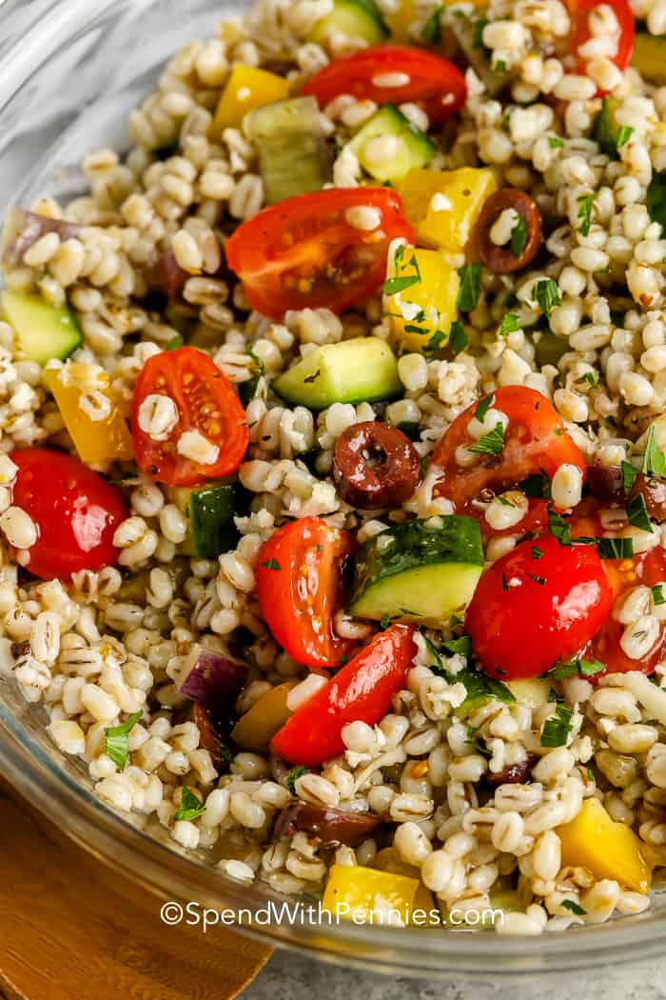

Barley Salad

Ingredients
- 1 cup pearl barley
- 2 cups water
- ½ (15 ounce) can black beans, rinsed and drained
- ½ green bell pepper, chopped
- ½ red bell pepper, chopped
- 1 (8.75 ounce) can whole kernel corn, drained
- 1 stalk celery, chopped
- 1 small red onion, chopped
- 1 large carrot, chopped
- ¾ chipotle pepper in adobo sauce, finely chopped, or to taste
- 1 tablespoon canola oil
- ½ teaspoon salt
- ½ teaspoon ground black pepper
- ½ teaspoon ground cumin
- ¼ cup water
- 2 tablespoons light corn syrup, or to taste
- 1 tablespoon canola oil, or to taste
- 1 tablespoon lime juice, or to taste
- 1 tablespoon lemon juice, or to taste
- ¼ cup chopped fresh cilantro
- 1 teaspoon distilled white vinegar, or to taste
- onion powder, or to taste
Steps
- Bring the barley and water to a boil in a saucepan over high heat. Cover, reduce heat to low, and simmer until the barley is tender, about 30 minutes. Remove from heat, and chill in refrigerator.
- In a large salad bowl, combine the cooked barley, black beans, green and red bell pepper, corn, celery, red onion, carrot, chipotle pepper, 1 tablespoon of canola oil, salt, black pepper, and cumin until thoroughly mixed.
- In a separate bowl, whisk together the water, corn syrup, 1 tablespoon of canola oil, lime juice, lemon juice, cilantro, white vinegar, and onion powder; pour dressing over barley mixture, and toss to combine. Refrigerate salad until cold.
From All Recipes